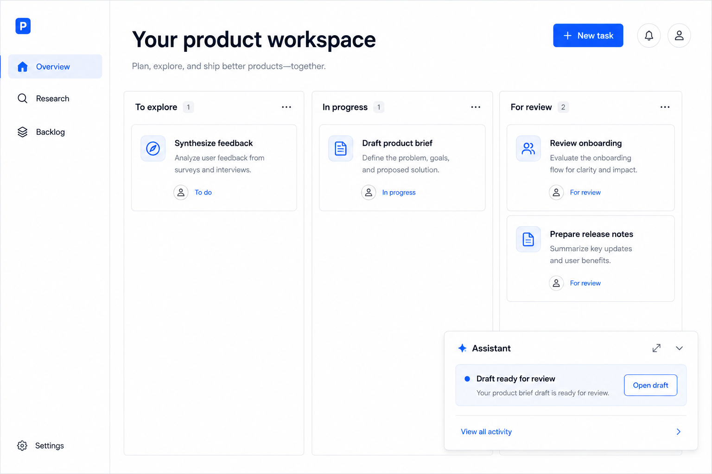

The why.
Focus on repeatable work that interrupts momentum: organizing feedback, framing an idea, and preparing release communication.
Product teams / Virtual employee / Concept outline
Turning recurring product work into reviewable drafts that help a team move forward.
Try the concept
01 / The question
The following is an initial concept hypothesis, not a report of completed research or measured results.
02 / Thought process
Focus on repeatable work that interrupts momentum: organizing feedback, framing an idea, and preparing release communication.
A small task-to-draft workflow with a clear review step and room for the product team to edit.
Start with bounded tasks and visible sample inputs. Show the proposed output before any approval or action.
03 / Try the interaction
Pick a task, create a sample draft, edit it, and approve it. This is a scripted interaction, not a live AI service.
Interactive sample only. Changes stay in this page and reset when reloaded. No real customer data or external systems are connected.
04 / Design rationale
A useful assistant should make its work easy to inspect. Drafts stay editable, and approval is a deliberate action.
05 / What to learn next
Watch where reviewers revise the draft and what context they need. Test usefulness before expanding the range of tasks.